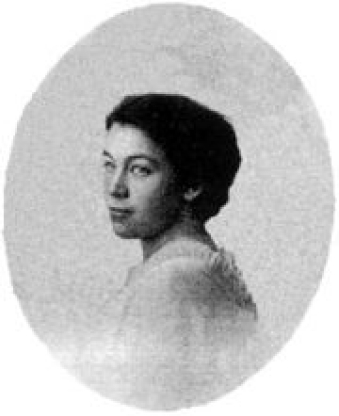

Окружение
Абаза (Штуббе) Юлия Федоровна
[1830 — 06.01.1915, Петроград]
(Урожденная Штуббе)
Писательница, певица, композитор, директор «Приюта для арестантских детей», хозяйка музыкального салона (в котором бывали П.И. Чайковский и А.Г. Рубинштейн), жена А.А. Абазы, министра финансов в 1880-х гг. Абаза поддерживала и развивала «вкус к хорошей и серьезной музыке». А.Г. Достоевская вспоминает: «У графини С.А. Толстой Федор Михайлович встречался со многими дамами из великосветского общества: с графиней А.А. Толстой (родственницей графа Л.Н. Толстого), с Е.А. Нарышкиной, графиней А.Е. Комаровской, с Ю.Ф. Абаза, княгиней Волконской, Е.Ф. Ванлярской, певицей Лавровской (княгиней Цертелевой) и др.
Все эти дамы относились чрезвычайно дружелюбно к Федору Михайловичу; некоторые из них были искренними поклонницами его таланта и Федор Михайлович, так часто раздражаемый в мужском обществе литературными и политическими спорами очень ценил всегда сдержанную и деликатную женскую беседу».
Вероятно, в самом конце 1870-х гг. Достоевский и познакомился с Абазой. Достоевский был на вечерах у Абазы в феврале 1880 г. и 15 марта 1880 г. В письме к С.А. Толстой 13 июня 1880 г. Достоевский передает Абазе «глубокий <...> от меня поклон и всевозможные пожелания, потому что я ее очень люблю».
Композитор М.М. Ипполитов-Иванов вспоминает, что «в начале зимы [1880—1881] он [Достоевский] часто появлялся на музыкальных вечерах Ю.Ф. Абазы, всегда во фраке, с цилиндром в руках. Я знал его место, заранее садился так, чтобы видеть его лицо, обычно очень бледное и с необыкновенно прозрачной кожей на большом открытом лбу, на котором каждая жилка была заметна. Входил он тихо и также тихо уходил, ни с кем не здороваясь, не прощаясь. Федор Михайлович очень любил музыку и, насколько я помню, не пропускал ни одного музыкального вечера; я неизменно караулил его приход и берег для него стул, чего он, конечно, и не подозревал...»
Известно одно письмо Достоевского к Ю.Ф. Абазе из Старой Руссы от 15 июня 1880 г. по поводу ее повести, которую он похвалил за главную мысль-идею, но посчитал, что выразить ее автору не удалось. Также известно четыре ее пригласительных письма к Достоевскому: приглашение на вечер, на елку с детьми, на чашку чая, на вечер с детьми (РГБ. Ф.93.II.1.2).